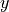
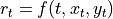
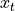
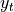
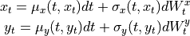
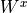
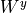
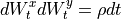

quantlib.models.shortrate.twofactor_model.
ShortRateDynamics¶
- class ShortRateDynamics¶
Bases:
objectClass describing the dynamics of the two state variables
We assume here that the short-rate is a function of two state variables
 and
and 
.
of two state variables

and
. These stochastic processes satisfy
where

and
are two brownian motions satisfying
- Attributes:
correlationCorrelation
 between the two brownian motions
between the two brownian motionsx_processRisk-neutral dynamics of the first state variable x
y_processRisk-neutral dynamics of the second state variable y
Methods
short_rate(self, Time t, Real x, Real y)